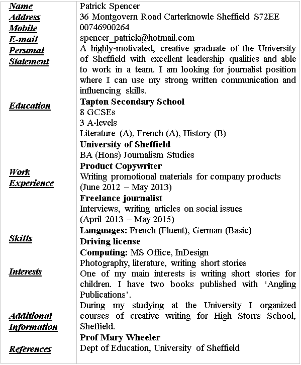
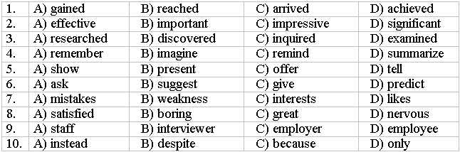

Lesson 21
UNIT 5
Employment and interview
BASIC EMPLOYMENT
Job interview
Learn the active vocabulary of the Lesson and be ready to
use it in your further work:
Apply for (a job) – available adv – be fired/ be dismissed – be promoted – be satisfied with – career prospects – challenge n – creative adv – CV n – deadline n – do/work overtime – earn v – employ = hire v – employee n – employer n – executive n – experience n – flexible hours – full-time job –
gap
year “рік відпочинку” (після закінчення
школи і перед вступом до ВНЗ);
hazardous adv – interview n – job n – night shift – occupation n – opportunity n – part-time job –
permanent adj –
постійний;probationary period –
випробувальний термін;repetitive adj –
повторюваний, нудний;require v –
потребувати;retire v –
піти на пенсію;rewarding –
той, що передбачає винагороду;salary n –
зарплатня (за місяць);set up (a company) v –
засновувати (компанію);skills n –
уміння, навички;staff n –
штат працівників;stressful adj –
напружений;survey = poll n –
опитування;temporary adj –
тимчасовий;trade n –
ремесло;unemployed –
безробітний;wage(s) n –
зарплатня (погодинна);well-paid –
добре оплачуваний. Read and translate the text:Patrick’s
CV.
Patrick
is a motivated young person. He has just graduated from University and is
looking for permanent employment. He has prepared a CV for a potential
employer.
CURRICULUM VITAE

Ask and answer some questions about Patrick with a partner:
What’s his ...?
Can he ... ?
What... interests?
Where ... ?
What kind of job ... ?
How old ...?
What work experience ... ?
What ... like doing?
What exams … at school?
GRAMMAR
EXERCISES
I.
Answer the following
questions:
1.
How do people find information about job vacancies?
2.
When people apply for a job do they need to send a CV? Do they need
references?
3.
What questions may people be asked at the job interview? Make a
list.
4.
Is there anything you shouldn’t say during an interview?
5.
Decide which qualities describe a good worker:
• ability to work in a
team
• sociable
• decisive
• leadership
qualities
• creative
II.
Explain meaning of the above-mentioned abbreviations in your native
language:
CVs and job advertisements sometimes use abbreviations. Understanding their meaning can simplify the job-hunting process. Here are some examples of widely used abbreviations:
CV Job
GCSE – General Certificate of Secondary Education
A-Levels
– Advanced LevelExaminations
BA
– Bachelor of ArtsMA
– Master of ArtsDept.
– departmentJob Advertisements
DoE – depends on experience
FT
– full-time employmentPT
– part-time employmentM-F
– Monday through Fridaysal.
– salary$9 p/h
– $9 per hour$450/wk
– $450 per week$1,200/mo
– $1,200 per monthreq
– requiredHS dip
– high school diploma requiredmin 2 yrs exp
– minimum 2 years ofexperienceapply ASAP
– apply as soon as possibleins.
– insuranceinc.
– including, includedbene.
– benefitsIII.
Prepare your CV for a job that you would really like to do and are well
qualified for:
IV.
Write the words in the correct order to make sentences or ques-
tions
someone could ask you in a job interview:
1.
nice/ Good afternoon,/ to/ you./ meet/
2.
in touch./ Thank you/ We’ll be/ for coming today.
3.
got/ any questions?/ Have you
4.
your/ tell us/ you/ previous work experience, /Can/ about/ please.
5.
in a team?/ you/ Do / work well
6.
start?/ could/ When / you
7.
this job?/ you want/ Why/ do
8.
a few questions./ would/ to ask/ We/ you/ like
9.
have you got/ help you/ What skills/ that/ in this job?/ would
10.
10.50 per hour/ Sundays. / and work / Wednesdays to / You’ll get
11.
are your/ What /and weaknesses?/strengths
V.
Read the text below and choose the best option from: A, B, C, or D:
JOB
INTERVIEW: BEFORE, DURING, AFTER
If
you have 1) _______ the interview stage, your CV and letter of application were
2) ________! Now the company wants to know more about you. But there is still
more work to do if you want to get that job! First of all, make sure you have 3)
________ the company as thoroughly as possible – use the Internet, company
reports etc. Secondly, 4) ________ yourself of why you applied to this company.
Make a list of the skills, experience, and interests you can 5) _________ the
organization.
Prepare
a one-minute answer to “Tell us about your self”. It would be also good for you
to prepare several PAR stories: a Problem you faced at work, how you Approached
it, and its positive Resolution. Finally, imagine you are the interviewer and
try to 6) _______ the questions you will be expected to answer!
At
the beginning of the interview, it is recommended to ask the following ques
tions: “What would you expect me to do during my first month of work?” Tell the
interviewer about your 7) ________ that are relevant to the job but do not
criticize yourself. For example you may say, “I’m not a team player. Give me
some thing to do on my own and you will be 8) __________ with my
results”.
After
the interview write a thank-you letter, in which you remind the 9) _______ of
things he or she liked. End by saying something like, “I’m enthusiastic about
the position and look forward to working with you.”
If you don’t get the job, don’t call to ask why. 10) ________, call to say: “I’d love to work for your company and want to let you know that if a similar position comes up, I’d welcome the opportunity to interview for it.”

VI.
Here are some questions that applicants are often asked in an interview. Try to
answer these questions and make a self-presentation:
1.
What is your name?
2.
How old are you?
3.
Where do you study?
4.
What is your major (main specialization / qualification)?
5.
What are you going to do after graduating from the university?
6.
What can you tell about your family?
7.
Where do you live?
8.
What are you interested in? What are you fond of?
9.
Have you ever been abroad? What was the purpose of your trip?
10.
Do you like traveling?
11.
Have you got a foreign passport?
12.
Can you drive a car? / Have you got a driving license?
13.
What are your strong and weak points?
14.
What stimulates your work?
15.
What are your goals in life for the nearest future and for 3-5 years ahead? /
What are your plans for the nearest 3-5 years?
16.
What do you want to achieve in life?
17.
Why have you applied for this job? What interests you most about it?
18.
How do you think you can be useful for our business?
19.
Do you plan to continue your education?
20.
Do you have professional experience?
21.
Where did you work before? What position did you hold?
22.
What were you responsible for?
VII. During the job interview Patrick was asked some questions. Translate the questions into English and find suitable response for every question:
Question
1.
Чому ви обрали саме нашу2.
Які ваші сильні й слабкісторони?
3.
Як ваші друзі можуть васохарактеризувати?
4.
Яке ваше найвагомішедосягнення?
5.
Наскільки добре ви працюєте в команді?5.
Наскільки добре ви працюєте в команді?6.
Ким/Де ви бачите себе через5
років?7.
Ви коли-небудь були уФранції?
8.
Ви володієте іноземнимимовами?
Response
A. People say I’m sociable, organized, and decisive.
B. My aim is to have a position in the Management Team.
C. I have excellent time management, but I can be impatient for results.
D. Because I think I will find the work environment both challenging and rewarding.
E. I always support my colleagues and believe we should work towards a common goal.
F. First of all I used to be the editor of our school newspaper. Also I won Literary competition twice.
H. Yes, I have. I studied there for six months. I lived in Marcel.
G. Yes. I speak French fluently and I know a bit of German.VIII. Patrick writes a follow-up email to ‘Life Style’. Complete the text with the appropriate forms of the verbs from the box:
Appreciate, confirm, contact, contribute, implement, impress , look, mention
Thank
you for talking with me about the position of assistant editor. I would like to
a) __________
my strong interest in joining the team at ‘LifeStyle’ magazine.
I
b) __________
the friendly welcome and was c) __________
with your plans for opening a new office in France.
As
I d) __________
yesterday, with my experience and relevant skills, I am sure I can e) __________
towards managing your office efficiently. I feel that my foreign-language skills
can help you to f) __________
your European strategy.
I
g) __________
forward to hearing from you. Please h) __________
me if you would like any further information.
IX.
Read the text about strange job interview questions:
STRANGE
INTERVIEW QUESTIONS
General
questions such as “Tell us a bit about yourself”, “Why do you want to work for
us?”, and “Describe your biggest achievement’” are all typical interview
questions that most candidates are familiar with and are ready to answer.
However, very often companies ask job seekers strange and unrelated questions.
Here are several real examples:
1.
Room, desk, or car – which do you clean first?
2.
Name five uses of a stapler without staples.
3.
How would you get an elephant into a refrigerator?
4.
How many people are using Facebook in San Francisco at 2:30pm on a
Friday?
5.
How would you cure world hunger?
6.
If you were a Microsoft Office program, which one would you be? Why?
7.
Pepsi or Coke?
8.
Describe the color yellow to somebody who’s blind.
9.
Who would win in a fight between Spiderman and Batman?
However
weird or irrelevant they may seem, these questions are designed to assess your
analytical thinking skills. When you are asked such a strange question, take
your time when answering it. Your interviewer doesn’t expect an immediate
answer. Think about what the company does and what the role in question aims to
achieve. May be the company wants to check your general knowledge, technical
ability or mathematical skill?
In
most cases, the process of getting to an answer is more important than the
actual answer itself. For some of these questions, there may be a number of
possible answers and not necessarily a right or wrong answer. It’s not the job
of the job seeker to actually know how many gas stations there are in the U.S.,
but it’s a great tool to see how well he thinks through the problem.
X.
Try to answer any of the weird questions from the text:
XI.
Do your own research:
— On the Internet find unusual job
interview questions and choose 4-6 you like best.
— Present your questions in
class.
— Ask your classmates to answer these questions.